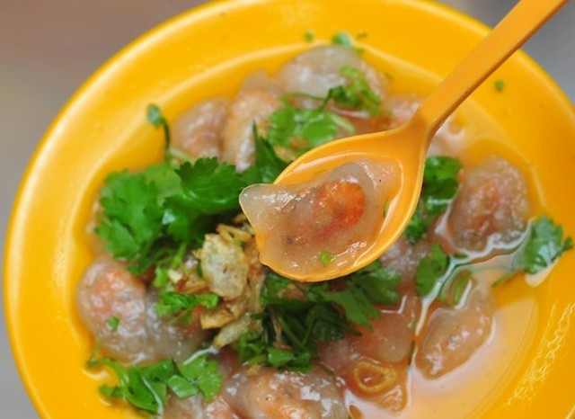
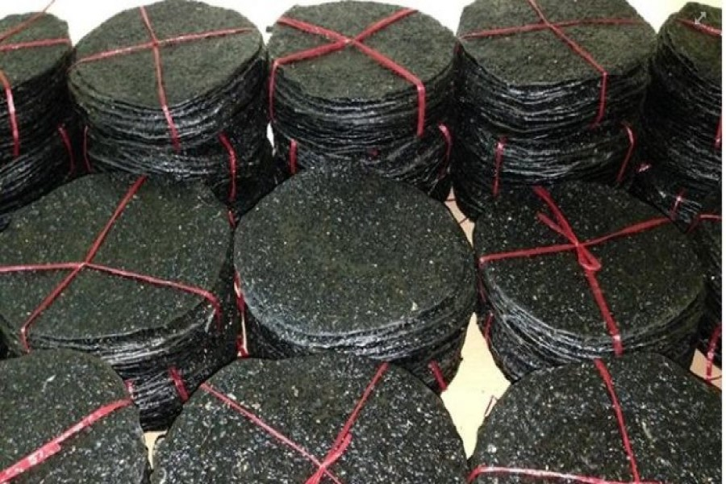
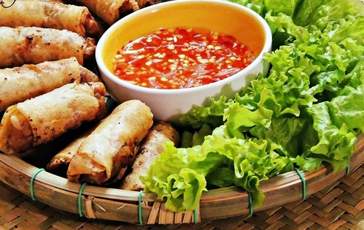
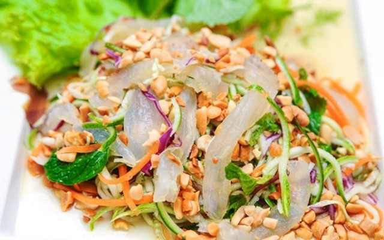

Bánh bèo là món ăn dân dã mà bất cứ nơi đâu bạn cũng có thể mua được nhưng ở mỗi vùng đất bánh lại mang hương vị và bản sắc riêng của nơi đó. Bánh bèo Hà Tĩnh cũng thế, nó mang một hương sắc riêng mà khi ăn vào bạn không thể nhầm lẫn với bánh nơi khác được. Bánh bèo được làm từ bột lọc, nhân trong làm từ tôm non bóc vỏ hoặc từ thịt nạc được xào lên cùng với hành khô, sau đó ăn kèm với rau thơm. Khi ăn cho thêm một ít tương ớt, tạo nên vị vừa cay, vừa chua ngọt của chanh đường rất hấp dẫn.
Bánh bèo dù ăn nóng hay nguội đều ngon và hấp dẫn. Khi ăn nóng, kèm nước mắm cay trong những ngày trời se se lạnh sẽ thấy ấm lòng. Còn khi ăn nguội, bánh hơi dai, giòn mang vị đậm đà
Địa chỉ:Du lịch Hà tĩnh nổi tiếng với món ăn dân dã, rẻ tiền nhưng lại rất ngon, khó có thể chối từ đó chính là món bánh đa vừng. Ở Hà Tĩnh món bánh đa vừng rất phổ biến, nó được bán ở khắp các chợ, các quán…có hương vị thơm giòn đậm đà mang bản sắc của vùng. Bánh đa vừng Hà Tĩnh được làm hoàn toàn bằng gạo, chiếc bánh to, dày, có nhiều vừng đen, vừa béo vừa ngậy, khi đói có thể ăn trừ cơm, chỉ thấy no mà không thấy chán.
Bánh đa ở Hà Tĩnh được làm hoàn toàn bằng gạo ngon, không pha thêm ngô, sắn như ở nhiều nơi khác. Thông thường khi làm bánh đa, người ta chọn loại gạo gié vụ mùa, vừa dẻo, vừa thơm, không dùng gạo xay từ các vụ lúa trước, năm trước vì lúa để lâu nên gạo mất chất không còn vị ngọt và thơm như gạo đầu mùa. Ở Hà Tĩnh người ta còn ăn bánh tráng xúc nham (gỏi) bắp chuối, hến xào… Đặc sản Hà Tĩnh làm quà mà là món bánh đa dành tặng gia đình và bạn bè thì không gì thích hợp hơn.
Địa chỉ:Ram theo tiếng Hà Tĩnh dùng chỉ món nem rán, là món ăn nổi tiếng, góp phần làm nên hương vị ẩm thực Việt Nam. Nhưng ăn ram ở Hà Tĩnh, sẽ cảm nhận một hương vị thật khác mà không có nơi nào có được. Bánh mướt là cách gọi khác của bánh cuốn, bánh ướt – món ăn ưa dùng của xứ Nghệ. Bánh mướt đơn giản chỉ cần chấm mắm, thường ngày là bánh mướt cuốn chả, sang hơn là canh gà bánh mướt. Người miền Bắc thường cuốn mướt với nhân thịt, khi tráng cho nhiều mỡ, nhưng người miền Trung bánh mướt để không nên khi ăn thưởng thức được hương vị mát lành, thanh đạm.
Ram mướt là thức bánh kết hợp hài hòa của hai loại bánh khác nhau, vừa giản dị vừa tinh tế, ăn vào giòn mà dẻo, béo nhưng không ngấy. Tuy cách chế biến khác nhau nhưng cả hai loại bánh cùng được làm từ gạo nếp, ngon, trắng, dẻo. Nếp được xay nhuyễn thành bột, trộn muối, đổ nước ấm, nhào cho chắc, mịn. Người làm bánh khéo léo phải biết lấy lượng bột vừa đủ, bánh mỏng nhưng dai.
Địa chỉ:Nhắc đến những món đặc sản Hà Tĩnh, ta không quên nhắc đến gỏi cá đục – một món ăn gắn liền với miền biển, sông nước- một thức quà đặc biệt riêng của vùng biển Xuân Nghi.
Cá đục dài khoảng 13-18 cm, thân to hơn ngón tay cái, sống gần bờ biển, có hình dạng tương tự loài cá bống nước ngọt. Cá đục có thể chế biến được rất nhiều món ngon vì thịt chắc, trắng, có vị ngọt và hầu như mùa nào cũng có.
Ăn gỏi cá đục nhất thiết phải có rau thơm và các loại lá sung, lá đinh lăng, lá xoài non… cùng với xoài xanh, khế chua, chuối xanh thái lát mỏng. Khi ăn dùng bánh đa nem cuộn rau với cá, chấm với nước lèo, bạn sẽ cảm nhận được vị béo của cá, vị bùi của cùi dừa, vị cay, vị chua lẫn vị thanh thanh, ngọt ngọt rất đặc biệt mà không nơi nào có được.
Địa chỉ:Hầu như vùng sông nước nào cũng có hến. Và hến cũng là món ăn ưa thích của nhiều gia đình Việt. Hến có một hương thơm đặc trưng quyến rũ, bát nước Hến đầu tiên nóng hôi hổi mát, thơm, đậm ngọt, bổ dưỡng, màu trắng sữa như nguồn sống vô tận của dòng sông quê mẹ. Đúng như câu ca ai ví “Dẫu ai đi quanh về quắt – không kẻo nước giắt Kẻ Thượng” (Giắt là loại Hến con sinh sôi rất nhanh vào mùa hè, thích nghi sống ở vùng nước lợ như phía hạ nguồn giáp ranh giữa sông La và sông Lam). Từ hến có thể chế biến ra nhiều món ăn để thay đổi hương vị cho bữa cơm thường ngày, như hến xào giá, ăn kèm bánh tráng, canh hến nấu rau tập tàng, cơm nước hến thêm chút gừng cay ăn kèm với cà muối mới thật đậm đà làm sao.
Vùng biển Vũng Áng Hà Tĩnh là một vùng biển đẹp nổi tiếng, là khu kinh tế sầm uất, nổi tiếng với những loài hải sản tươi ngon, đặc sản… Ở đây nổi tiếng với mực nhảy vì những con mực ở đây rất to và được chế biến ngay sau khi đánh bắt nên người dân ở đây gọi là mực nhảy. Mực nhảy có thể được chế biến thành nhiều món ăn khác như luộc, xào, hấp hay gỏi. Mực nhảy có vị tươi, ngon, thơm rất đặc trưng, khác hoàn toàn so với các loại mực ở vùng biển khác trên cả nước.
Bún bò là món ăn truyền thống quen thuộc của người Việt nhưng bún bò Đức Thọ mang nét đặc trưng riêng nhờ sự khác biệt trong lựa chọn nguyên liệu và chế biến. Không như các loại bún trên thị trường được chế biến qua máy móc hiện đại, bún ở Đức Thọ được làm thủ công bằng tay nên sợi bún to tròn và có màu hoa cau vì không qua công đoạn xử lý làm trắng màu bún. Loại bún này phải được làm từ gạo quê Đức Thọ, thịt bò cũng là thịt tươi, mềm từ những chú bò được chăn thả ven đê làng quê Đức Thọ. Mặc dù hình thức của món ăn không đẹp như nhiều loại bún khác nhưng bún bò Đức Thọ vẫn chinh phục trái tim thực khách bởi hương vị dẻo thơm mộc mạc.
Đến thăm Hà Tĩnh, bạn đừng quên ghé qua bất cứ quán ăn ven đường nào để thưởng thức món bún chả Hà Tĩnh. Bún thịt nướng tuy không mới nhưng người dân địa phương thổi hồn vào món ăn này hương vị đồng quê chân chất với sự khác biệt ở nước chấm: nước tương. Gia vị ăn kèm bún thịt nướng Hà Tĩnh không phải nước mắm, nước xương như người miền Bắc mà là nước tương – thường được người dân gọi là chẹo. Chẹo chế biến từ nước tương, trộn với lạc rang giã nhỏ kết hợp với ớt tỏi đường, tạo nên mùi vị chua cay mặn ngọt làm đậm đà thêm vị thịt và nét thanh mát của bún.
Suất bún chả một người ăn có giá rất phải chăng, khoảng 30.000 đồng. Các quán bún thịt nướng thị xã Hồng Lĩnh, Hà Tĩnh tập trung nhiều ở phố Trần Phú, Phan Anh, Nguyễn Ái Quốc… và bán cả ngày nên du khách có thể thoải mái lựa chọn thời điểm đi ăn
Nhìn vẻ bề ngoài cháo canh có vẻ giống mỳ vằn thắn hoặc bún nhưng những du khách đã đến Hà Tĩnh và nếm thử món ăn này sẽ bị ấn tượng bởi hương vị ngọt ngọt, chua chua, cay cay của nó. Nguyên liệu chính làm nên món ăn đặc biệt là bột mỳ. Bột được cán thành sợi như bún rồi chan với nước dùng từ xương lợn ninh nhừ, ăn kèm giò chả, thịt lợn, chút thịt bò và lá mùi tàu thái sợi, tạo nên món ăn vô cùng độc đáo.
Bạn có thể góp ý qua đường link bên dưới. Cảm ơn.